搭建域环境机器选择：
域控：Windows_server_2008_r2
域服务器：Windows_server_2012
PC机器：win7、winXP
推荐几个Windows Server 2008 R2镜像下载地址：
- https://www.cnblogs.com/waw/p/4588629.html
- https://msdn.itellyou.cn/
- https://pan.baidu.com/s/1yaN_tRjaGVUCNIAaOGx8gA 提取码：izny
配置AD域服务
下载好镜像后,添加至VM中开始安装。我这边给域控分配的是2G内存，30G储存。
选择Windows Server 2008 R2 Standard(完全安装)
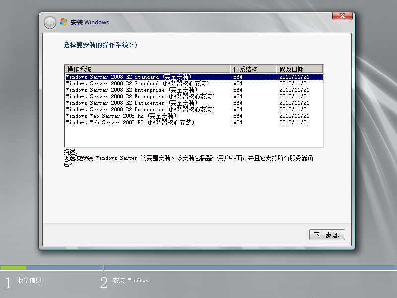
选择自定义(高级)
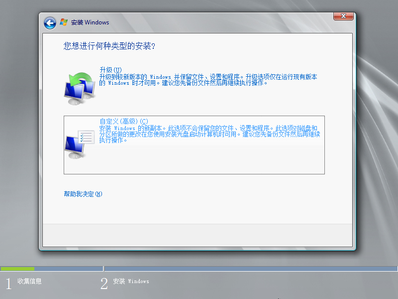
点击下一步
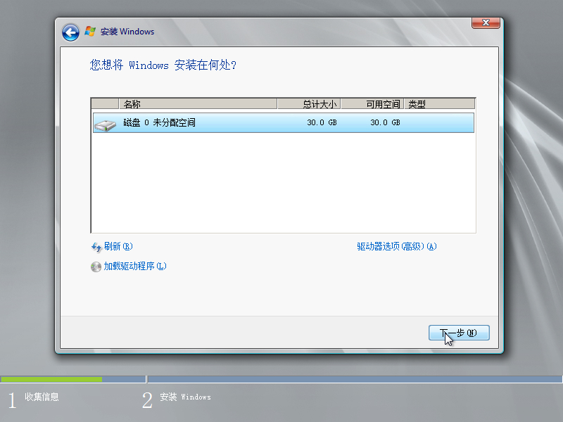
等待安装
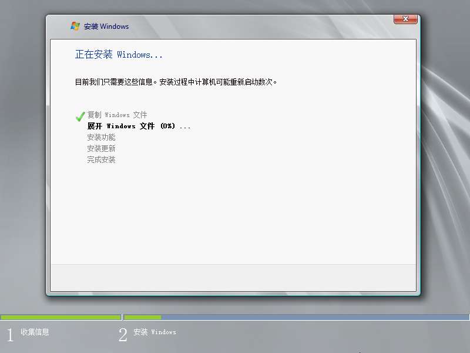
设置完账号密码后登陆，选择添加角色，选择安装Active Directory 域服务即可

添加域名，尽量不要和经常使用的重合= =
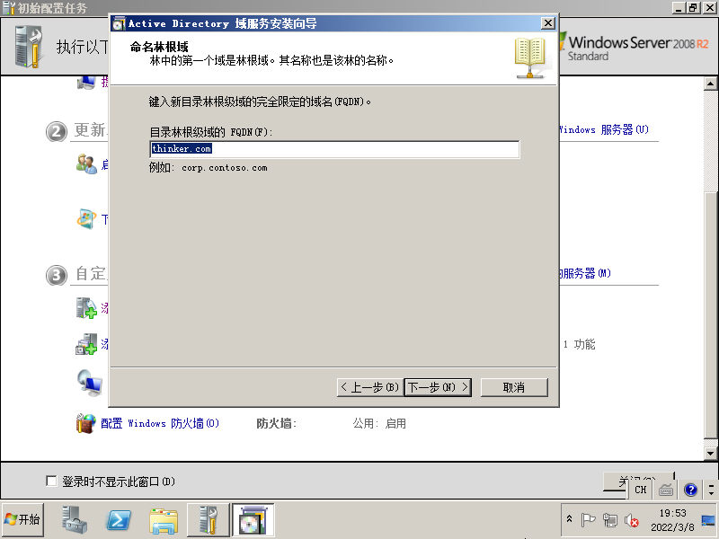
下一步
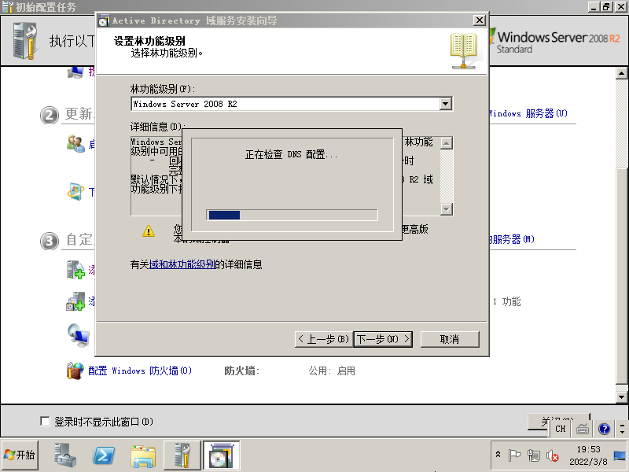
DNS服务器安装
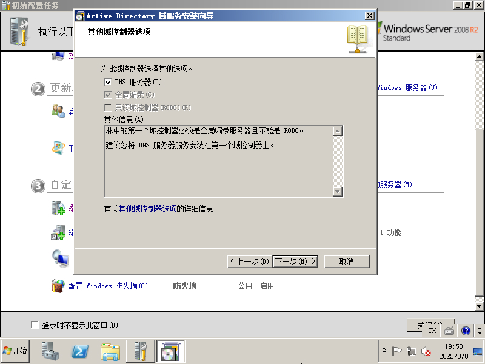
是
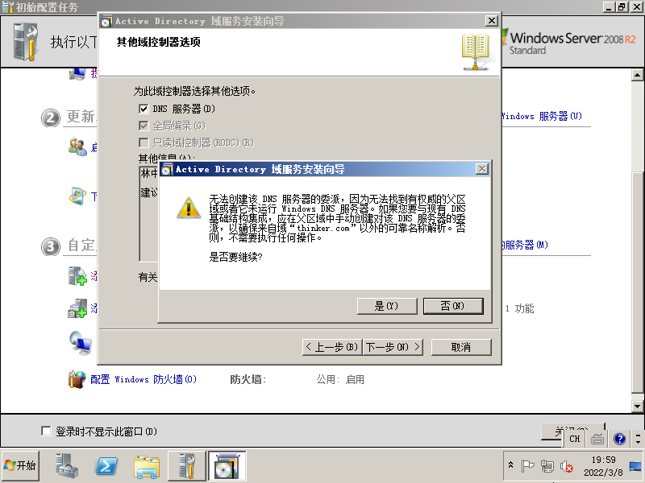
配置IP，这台机器的IP是192.168.71.137，192.168.71.2的是VM的网关，配置完后域控就配置完了
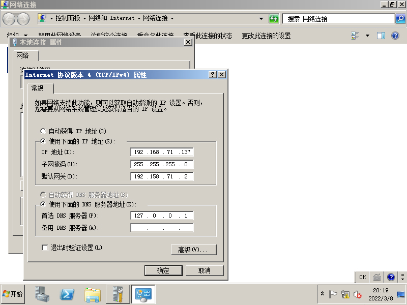
配置win7 pc机器
配置PC win7的网络，备选DNS记得选上VM的，免得域控没开，机器不能出网
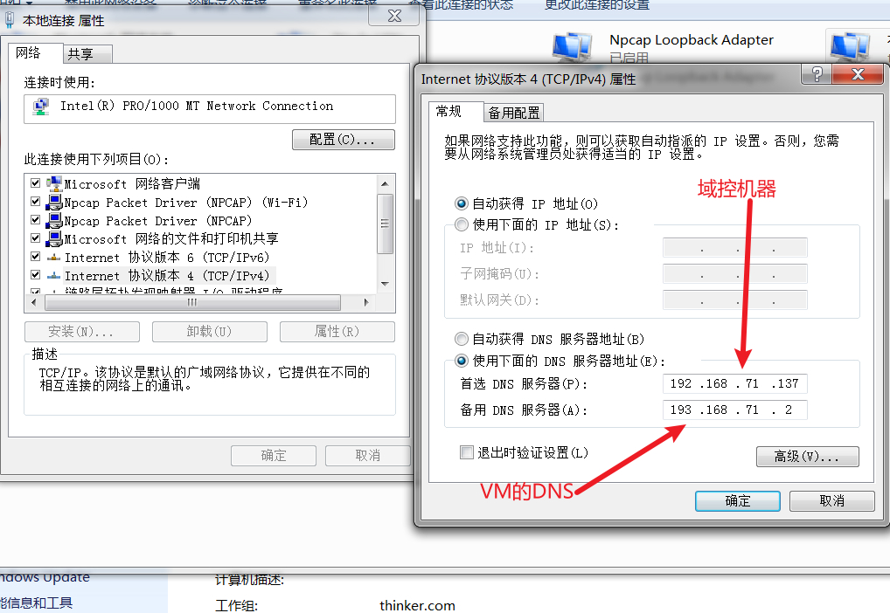
在域控中查找Active Directory 用户和计算机->users->新建->用户
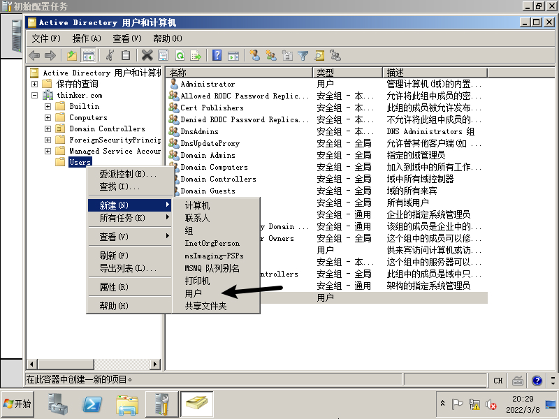
将域用户信息填入。
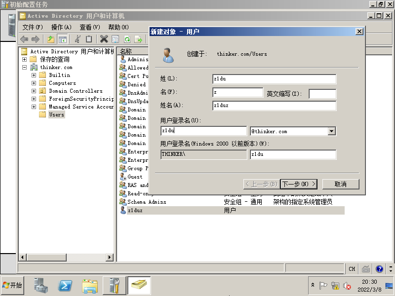
此计算机->属性->系统属性->计算机名/域更改->选择域，填入域名，之后登陆刚刚添加的域用户账号，弹出欢迎加入域，即配置成功
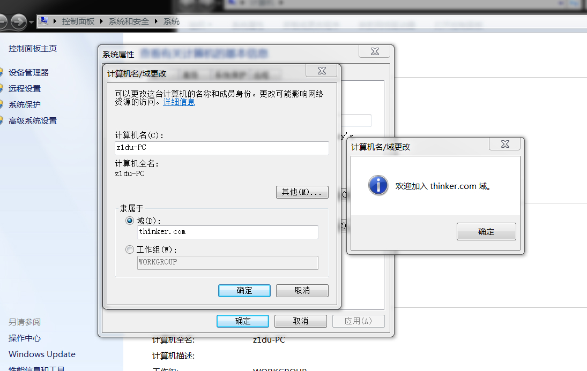
遇到XP客户机加入域的问题：加入域显示不能访问网络位置。
要解决此问题，请启动 TCP/IP NetBIOS 支持服务，然后加入域。
要启动 NetBIOS 支持服务，请按照下列步骤操作：
1 | 1. 使用具有管理员权限的帐户登录到客户机。 |
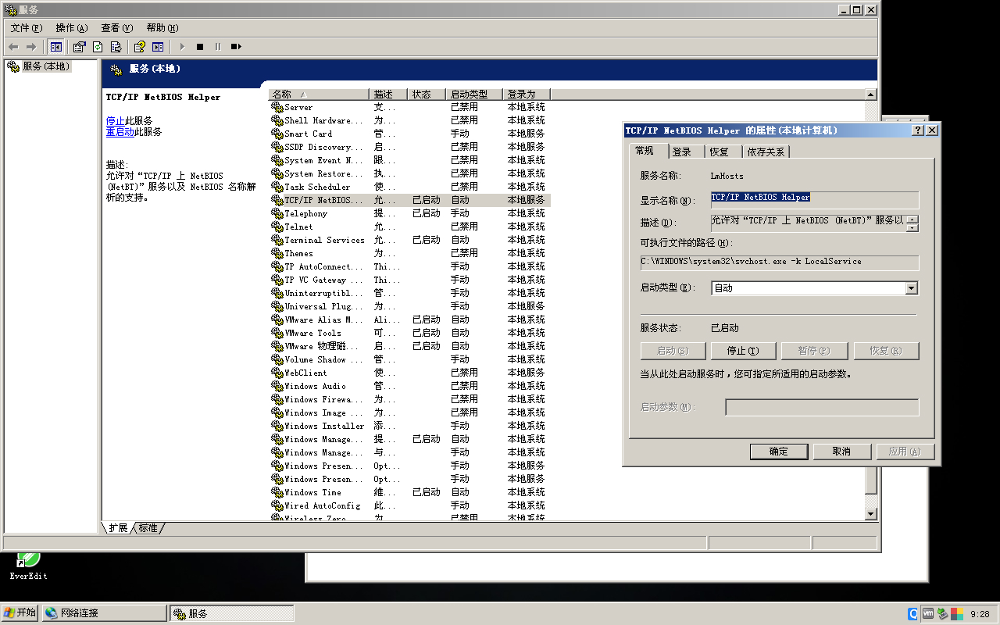
然后继续配置域名，登陆域账号，即可加入成功

剩下的机器按照以上配置即可，逐个加入域